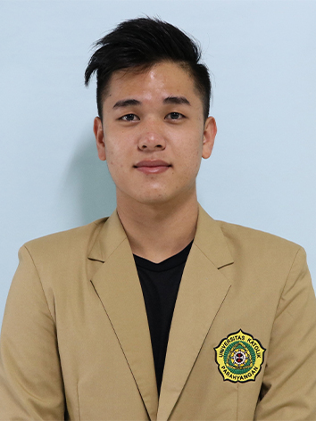

STERENLIE
Profil singkat
Bakuning Hyang Mrih Guna Santyaya Bhakti adalah slogan kami. Mahasiswa di Universitas Katolik Parahyangan
yang sangat senang berinteraksi dengan sesama. Cukup aktif
menggunakan media sosial untuk mendapatkan informasi atau berita yang terbaru.
Pada kegiatan di luar kampus, saya memiliki hobi lari, biasanya lari di track lapangan. Hobi yang didasarkan oleh pemikiran capek pasti, tetapi pasti sehat.
Pada kegiatan di luar kampus, saya memiliki hobi lari, biasanya lari di track lapangan. Hobi yang didasarkan oleh pemikiran capek pasti, tetapi pasti sehat.
Biodata
Sterenlie lahir di tanggal 7 Maret 2000 di Bandung Sukabumi.
Motto hidup
Hiduplah seakan bahwa kamu akan meninggal esok hari. Belajarlah selayaknya kamu akan hidup selamanya.
Mahatma Gandhi